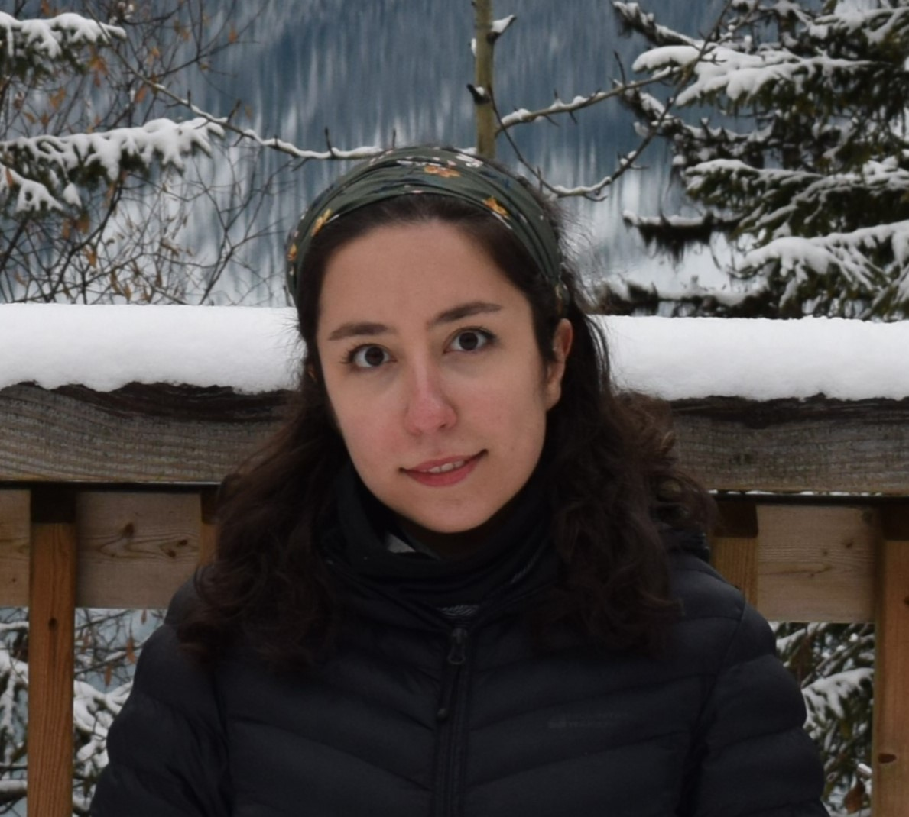
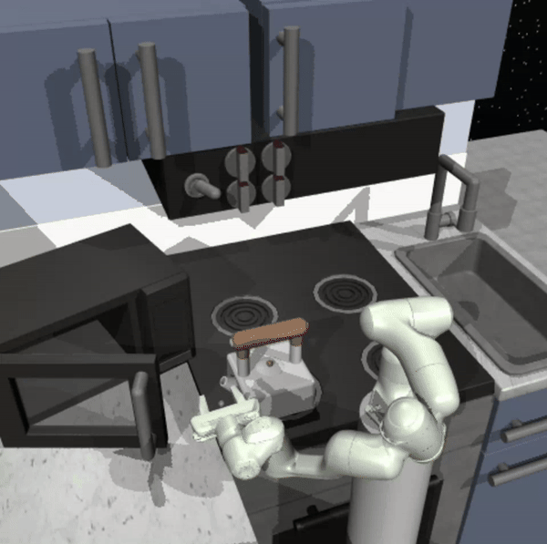
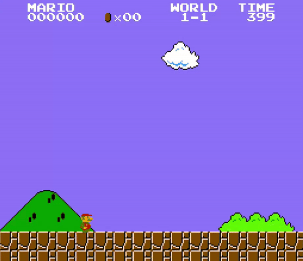
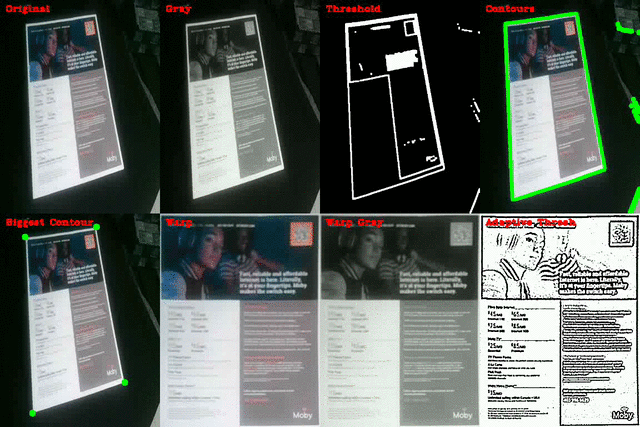

|
Mobina Jamali I'm a roboticist and AI researcher working on Multi-Agent Reinforcement Learning. I received my BSc in Physics from the University of Calgary, focusing on developing advanced architectures for automation and control of Autonomous Underwater Vehicles, advised by Alex Ramirez Serrano. Since then, I've been engaging in different independent and collaborative research projects, aiming to develop intelligent agents capable of supporting humans in executing complex, multi-step tasks through a combination of learning and planning. Currently, I’m advancing this work at Intelligent Robot Learning Lab under the supervision of Matthew Taylor, where I focus on human-in-the-loop multi-agent reinforcement learning. |
 |
{kind=link}
Teaching
[Winter 2022] Teaching Assistant, PHYS229 (Modern Physics), University of Calgary
|
Awards
[Spring 2022] Program for Undergraduate Research Experience (PURE), University of Calgary
|
ResearchI'm interested in embodied AI, deep learning, and computer vision. My goal is to enhance human-agent interaction in dynamic and unpredictable environments. |

|
Advancing the Control for a Highly Maneuverable Autonomous Underwater Robot
Code / Thesis This project, completed for my undergraduate thesis at the University of Calgary, presents a comprehensive architecture for the dynamic modeling, control, and simulation of a Highly Maneuverable Autonomous Underwater Vehicle (HM-AUV). |
|  |
Robotic Arm Manipulation with Hierarchical Reinforcement Learning and Imitation Learning
Code Solving multi-stage, long-horizon robotic manipulation tasks via Imitation and Hierarchical Reinforcement Learning. |
|  |
Super Mario AI Double Deep Q-Network
Code Building Double Deep Q Network (DDQN) from scratch and training AI agent to Play Super Mario Bros. |
|  |
Document Scanner
Code Creating real-time document scanner with great precision using computer vision. |

|
Cosmic Explorer
Code Exploring the cosmos through analyzing the SDSS large-scale astronomical survey and training classifiers to explore celestial objects based on their properties. |

|
Chat-Mingle Telegram Bot
Code Building a Telegram Bot capable of connecting random individuals together from diverse backgrounds giving them the possibility to chat. |
Hobbies |
|
Hiking
Living in beautiful Alberta means the Canadian Rockies are practically in my backyard. And take it from me- few things compare to the simple joy of enjoying a cup of tea at the summit after a challenging climb. | |
|
Photography
My lens helps me capture a piece of nature's beauty, from the fine details of a leaf to the vast, changing views of mountain ranges. |
Fun Fact!
My inner curiosity at the age of 16 made me to spend two years on a project during high school,
"Investigating the Effect of Arbuscular Mycorrhizal Fungi (Glomus etonicatum) and Air Pollutants on Growth Parameters of Maize (Zea mays L.)".
Published in the Journal of Clinical Epigenetics,
it led to several speaking invitations and presenting my work at Applied Microbiology and
Beneficial Microbes in Osaka, Japan .
|
|
Design and source code from Jon Barron's website. |